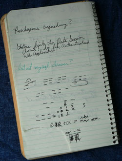

A nested for, for Wicket
Old-fashioned Web frameworks are like weak-willed parents. They tell you not to drive <% Dad’s sports car %>—unless you really need it. Or, they hand over the keys to a <c:forEach …> repainted old tanker </c:forEach>, as if its bulk and inefficiency would keep you from careening off the cliff on dead man’s curve.
But in Wicket’s house you can just forget about it. Don’t even try to disguise your executable code as XML. That trick won’t work here. You will compile your logic—all of it!—and you’ll thank Wicket for it later.
So an experienced programmer immediately wonders, “How are you supposed to make a table out of a collection in Java code—won’t it be as clumsy as a custom tag?” Well no, because Wicket does the markup work for you. You can iterate over any valid HTML node.
This programmer eventually learns to love looping with ListView, perhaps after spending some time with Databinder’s bookmarks example. But then one day the boss-man comes along with a seemingly simple request, “I want a two column list sorted vertically. And I want it yesterday! Grr!”
a d b e c f
The programmer knows how to do it with a script: nested for loops and some arithmetic. He can’t do that in Wicket, but nesting ListViews should work. The only problem is the model object. He needs a list of row-lists, something like ((a,d),(b,e),(c,f)). Where the heck is he going to get that?
It’s easy enough to build in a Page constructor. But then the list would be generated only once and kept in memory—not great. So he makes an IModel implementation that rebuilds this lists of lists every time getObject() is called. It’s graceless, since getObject() is called several times per request, but the list is short and he has things to do this weekend, so that’s that.
(Disclosure: “he” is actually me. Well, not really, since I made the Databinder bookmarks example, and my boss doesn’t growl, but still.)

It’s a tricky problem, but I think I’ve finally arrived at a good solution: SublistProjectionModel. Feel free to copy & paste, or if you’re using Databinder you can update to 0.6-SNAPSHOT.
To the IModel interface the SublistProjectionModel presents lists of lists, but its only retained object is a model containing the continuous “master” list. From that it builds a transient list of ProjectedSublist objects, which are virtual lists that forward their get(i) requests to the master list. Constructing these is much less work than building real lists, and each consumes a small amount of memory unaffected by the size of the list.
You can act on the leaf node models of the sublist as in any ListView, so form fields are fine, but Wicket’s and Databinder’s move & remove helpers won’t work (yet). For those actions you need to work with the master list, then call detach() on the projection model.
The SublistProjectionModel, then, is a tool to efficiently project a single list into arbitrarily transformed sublists. It includes two implementation classes. “Chunked” splits your master list into a given chunk size, as in ((a,b),(c,d),(e,f)). “Transposed” is the one you need for doing vertical sorting in a horizontally defined table; it solves the problem defined above. Woo!
And, Whew. Is it a bad thing that it’s taken me months to properly solve a problem that I could have done with scripting in ten minutes?
Well, sort of. But on the other hand, the transposed layout problem is solved for all time. Now you can just use it anywhere, unlike a nested for in a scripted template or a custom tag for tables.
And now that I’ve hit on using one IModel as a lens for another (which for all I know everyone else was already doing), I can use the idea for other problems: single-list sorting, date formatting, number formatting—all without burdening data classes with unwanted, redundant UI code.
But for now I’m just happy to have efficient vertically sorted columns. Grr.
Add a comment